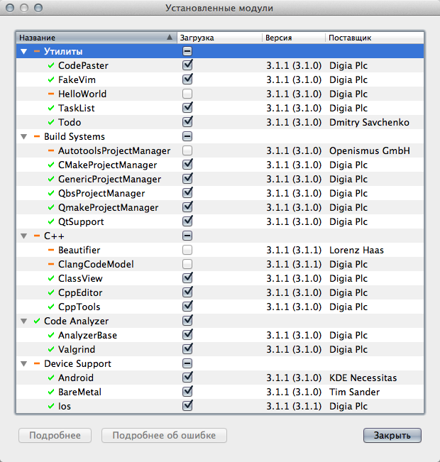
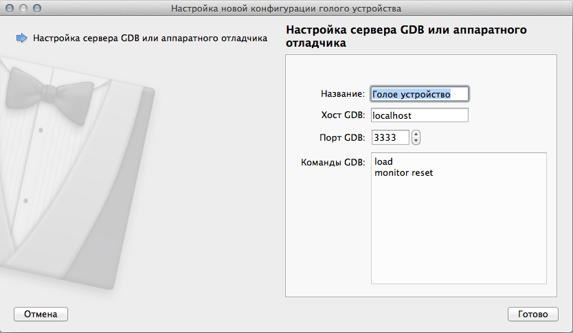
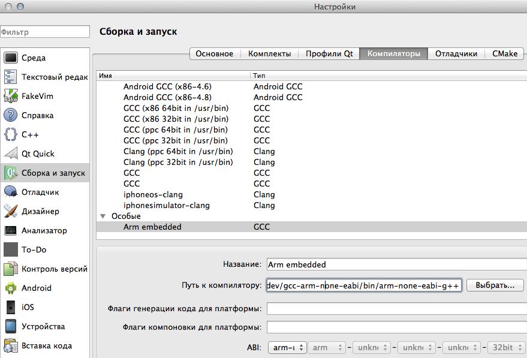
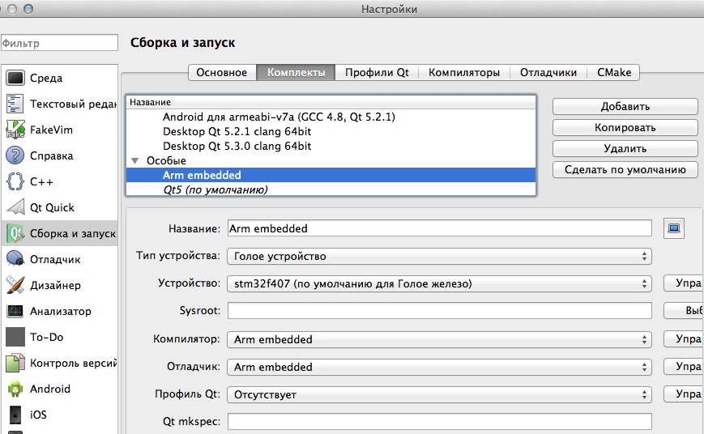
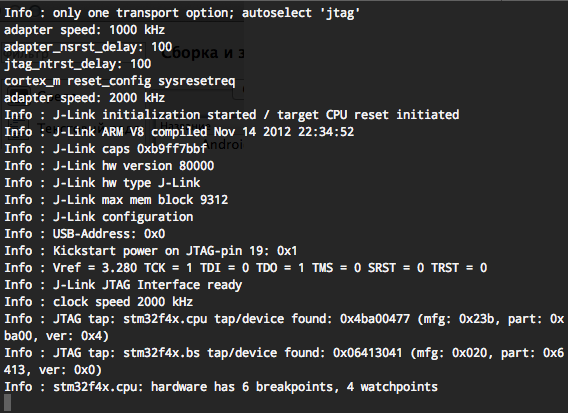
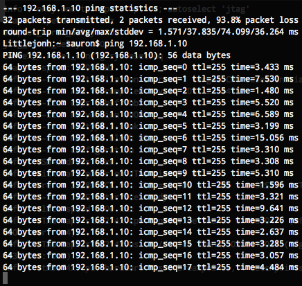

Как-то так незаметно получилось, что программист, который разрабатывал нам прошивку для микроконтроллера, стал банально не успевать и в некоторые моменты я начинал перехватывать инициативу и самостоятельно браться за исправление ошибок.
Разработка велась в среде IAR, и многие согласятся со мной, что по сравнению с разработкой в QtCreator'е это боль и страдание.
В какой-то момент мы решили, что быстрее нанять нового программиста и вместе с ним заново переписать прошивку контроллера stm32, так, как я к этому моменту уже немного сам смыслил в их программировании и к тому же обнаружил, что QtCreator умеет отладку на голом железе (плагин BareMetal), я решил принять в этом активное участие.
Здесь я хочу поделиться шаблоном проекта для stm32f407 от Terra Electronica и рассказать об особенностях его настройки.
Тестовый проект
Этап первый — тулчейн
Для разработки использовался Yagarto, или gcc-arm-embedded, который можно скачать здесь. Для платформ, отличных от Linux, существует существенное ограничение: gdb в них собран без поддержки Python'а, что делает невозможной отладку через QtCreator, оптимальным выходом будет все-таки использование Linux, или на худой конец OSX, где не составляет труда пересобрать gdb с поддержкой python.
QtCreator можно использовать как из репозитория, если его версия не ниже, чем 3.1, или же скачать в составе QtSDK. Главное, чтобы в нем была включена поддержка qbs и BareMetal
Этап второй — настройка IDE
Включаем BareMetal и QbsProjectManager и перезагружаемся.

Теперь мы можем зайти во вкладку «Устройства» и нажать на «добавить устройство», если вы все правильно сделали, то там должен появиться тип «Голое устройство». Для отладки будет использоваться gdb-server, поэтому необходимо убедиться, что его адрес и порт указаны верно.

Во вкладке компиляторы добавляем наш arm-none-eabi-g++

Аналогичным образом добавляем отладчик arm-none-eabi-gdb, после чего создаем новый комплект, в котором указываем тип устройства «Голое устройство» а также наш компилятор и отладчик.

Этап третий — сборка тестового проекта
Тут все просто, стягиваем шаблон с гитхаба, открываем файл stm32.qbs, выбираем созданный нами профиль arm-embedded и компилируем. На выходе должен получиться elf файл с прошивкой, который каким-то образом нужно будет запустить на устройстве.
Этап четвертый — запуск
Вот тут уже все зависит от типа отладчика, которым вы пользуетесь, я пользуюсь клоном jlink и запускаю его при помощи openocd, QtCreator пока не умеет самостоятельно поднимать сервер отладки, поэтому нам потребуется запустить его руками в папке с шаблоном есть файл openocdf.cfg, с профилем для jlink.

После того, как вы запустите openocd, можно просто нажать на кнопку «Начать отладку» в QtCreator'е и заполучить уже полностью привычную среду. В данном шаблоне реализована работа с tcp посредством lwip и написан простенький tcp echo сервер, который находится по адресу 192.168.1.10 и слушает 7000 порт, а также отвечает на ping запросы. Если все успешно собралось и запустилось, то можно будет увидеть такую картину:

Но думаю эта статья была бы не полной без описания внутренностей проекта.
Что же у этого проекта под капотом?
Для сборки используется qbs, достоинства которой уже обсуждались на Хабре.
Чтобы не захламлять сам файл проекта, я создал модули Stm32Product, Stm32Application, в которых задал все необходимые для сборки ключи компилятора и линковщика
Stm32Product
import qbs
Product {
Depends { name: "cpp" }
cpp.commonCompilerFlags: [
"-mcpu=cortex-m4",
"-mthumb",
"-mfpu=fpv4-sp-d16", //включаем аппаратную поддержку плавающей точки
"-mfloat-abi=softfp" //с програмной инициализацией
]
cpp.linkerFlags: [
"-mcpu=cortex-m4",
"-mthumb",
"-mfpu=fpv4-sp-d16",
"-mfloat-abi=softfp",
]
}
Stm32Application
Stm32Product {
type: "application" // To suppress bundle generation on Mac
consoleApplication: true
cpp.positionIndependentCode: false
cpp.executableSuffix: ".elf"
cpp.linkerFlags: {
base.push("-Xlinker");
base.push("--gc-sections");
return base;
}
}
Собственно проектный файл app.qbs
import qbs
import Stm32Application
import qbs.FileInfo
import qbs.ModUtils
Stm32Application {
name: "Application"
cpp.includePaths: [
"app",
"libs",
"libs/cmsis",
"libs/port/gcc",
"libs/periphery",
"libs/system",
"libs/ethernet",
"libs/lwip/src/",
"libs/lwip/src/arch/",
"libs/lwip/src/include",
"libs/lwip/src/include/lwip",
"libs/lwip/src/include/ipv4", //Use old internet protocol due ipv6 has experimental status
"libs/lwip/src/include/netif",
"libs/lwip/src/netif",
"libs/lwip/include",
]
cpp.defines: [
"STM32F4XX", //дефайнами настраиваем cmsis на нашу плату
"STM32F40_41xxx",
"USE_STDPERIPH_DRIVER",
"HSE_VALUE=168000000",
]
Properties {
condition: cpp.debugInformation
cpp.defines: outer.concat("DEBUG")
}
cpp.linkerScripts: [
"../ldscripts/libs.ld", //особенно интересный момент: скрипты линковщика, описывают структуру бинарника, секции, и так далее
"../ldscripts/mem.ld",
"../ldscripts/sections.ld",
]
Group {
name: "sources"
prefix: "../**/"
files: [
"*.c",
"*.cpp",
"*.h",
"*.s"
]
excludeFiles: [
"ipv6/*.*",
"test/unit/**/*.*",
]
cpp.cxxFlags: [ "-std=c++11" ] //gcc вполне позволяет использовать для программирования МК новый стандарт C++11
cpp.cFlags: [ "-std=gnu99" ]
cpp.warningLevel: "all"
}
Group {
name: "ldscripts"
prefix: "../ldscripts/"
files: "*.ld"
}
}
В общем, как мне кажется, данный шаблон будет не слишком трудно адаптировать и под другие микроконтроллеры, главное, чтобы для них имелась поддержка gcc и доступные в исходных кодах библиотеки для работы с периферией. Я надеюсь, что многим, как и мне, удобнее работать в QtCreator, чем в таких IDE, как Eclipse, Keil или IAR.